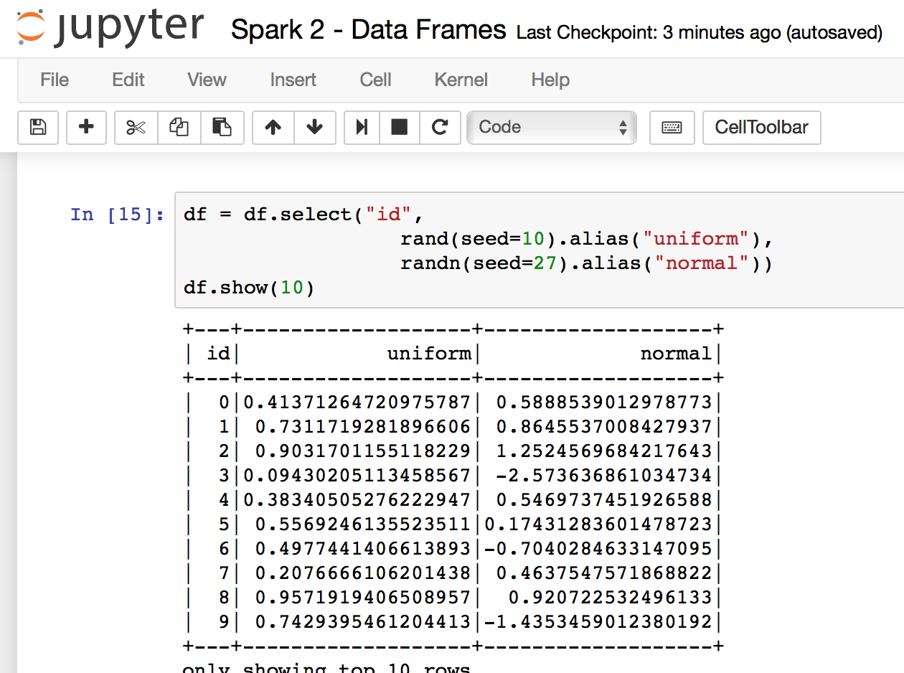
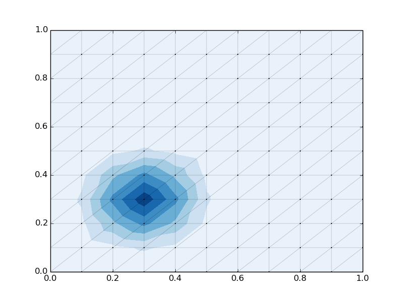
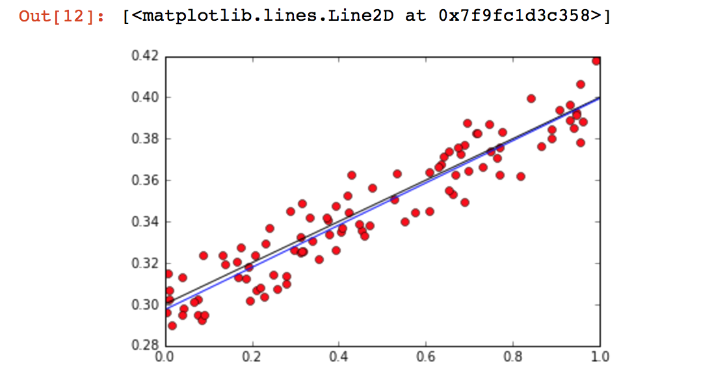

name: title layout: true class: center, middle, title count: false --- ##Finding MPI's Place In Today's Big Computing Jonathan Dursi<br/> Senior Research Associate<br/> Centre for Computational Medicine<br/> The Hospital for Sick Children --- name: my-background-1 layout: false .left-column[ ## Who Am I? ### Old HPC Hand... ] .right-column[ Ex-astrophysicist turned large-scale computing. - Large-scale high-speed adaptive reactive fluid fluids - DOE ASCI Center at Chicago - ASCI Red - ASCI Blue - ASCI White - FORTRAN, MPI, Oct-tree regular adaptive mesh ] ??? Before we start, let me tell you a little about where I'm coming from. This story is probably pretty familiar to many of you - I started off doing science with computing, and ended up drifting to the other side of that divide, doing computing to support science. I was doing pretty pretty standard HPC stuff - high speed flows (so explicit methods), reactive, adaptive grid, FORTRAN with some C and python, that sort of thing. -- .right-column-cont[ - Joined HPC centre after postdoc - Worked with researchers on wide variety of problems - Got interested in genomics: - Large computing needs - Very interesting algorithmic challenges ] ??? After doing a postdoc in Toronto, I moved into the HPC Centre there, working with them and Compute Canada - a little like PRACE or XSEDE - and working with a lot of different researchers doing a lot of different problems. Before too long, I started becoming interested in genomics - partly because it was the new frontier, with fascinating and deep algorithmic challenges, but also required very large-scale computing to accomplish its promise. --- name: my-background-2 layout: false .left-column[ ## Who Am I? ### Old HPC Hand... ### Gone Into Genomics ] .right-column[ Started looking into Genomics in ~2013, made move in 2014 - Ontario Institute for Cancer Research - Working with Jared Simpson, author of ABySS (amongst other things) - First open-source human-scale de novo genome assembler - MPI-based ] ??? I began working in genomics with Jared Simpson, who amongst other accomplishments was the author of ABySS, one of the very early large-scale de novo genome assemblers from what we now call short reads. It tackled large - including human - genomes by using distributed memory, using MPI. So it sounds like I found a pretty good niche in Genomics for an HPCer, right? -- .right-column-cont[ - "Never Again" - ABySS 2.0 just came out, with a new non-MPI mode ] ??? Not quite. ABySS 2.0 just came out, with a new non-MPI mode which will almost certainly become the default after the kinks are worked out. There are absolutely no plans by any of the development team to develop new MPI-based algorithms or tools --- name: my-background-2 layout: false .left-column[ ## Who Am I? ### Old HPC Hand... ### Gone Into Genomics ] .right-column[ In the meantime, one of the leading standards for genome analysis, GATK, has just announced that version 4 will support distributed cluster computing — using Apache Spark. <img src="gatk-spark-news.png" width=75%> ] ??? In the meantime, one of the leading standards for genome analysis, GATK, has just announced that version 4 will support distributed cluster computing — using Apache Spark. --- name: begin layout: false class: center, middle, inverse ## MPI's Place In Big Computing Is Small, and Getting Smaller ??? How did we get here? This is the background I'm coming from when I talk about MPI's place in modern big computing - even big scientific computing. In the broader sweep of large technical computing, MPI's place is small, and getting smaller. --- layout: false .left-column[ ## Top500 vs The Cloud ### 2013 ] .right-column[ .right[] ] ??? You can see this when looking at who is computing and where they are doing their computations - when I started looking at big scientific computing more broadly in 2013, the top500, where most MPI tasks are run, was already starting to be a fairly small fraction of the available computing out there... --- layout: false .left-column[ ## Top500 vs The Cloud ### 2013 ### 2016 ] .right-column[ .right[] ] ??? And it's only gotten smaller as time goes on. --- name: begin layout: false class: center, middle, inverse ### MPI's Place In Big Computing Is Small, and Getting Smaller ## but it doesn't have to be this way ??? The underlying reason is _good_ _news_ — this is the most exciting period of time ever in large-scale computing, with new disciplines, new data sources, and new types of hardware sprouting up everywhere in just a decade. There's so much to do! During this big-computing cambrian explosion we're experiencing, MPI's "steadfastness" has been welcome but is holding it back from being part of this growth. But that need not be the case - the MPI community broadly has much to learn and much to contribute to these other models **if it chooses to do so**. --- layout: false .left-column[ ## Outline ] .right-column[ - A tour of some common big-data computing problems - Genomics and otherwise - Not so different from complex simulations - A tour of programming models to tackle them - Spark - Dask - Distributed TensorFlow - Chapel - A tour of data layers the models are built on - Akka - Data Plane Development Kit - Libfabric/UCX - GASNET - Where MPI is: programming model at the data layer - Where MPI can be ] ??? It's very difficult to describe what place MPI occupies in the landscape without drawing a map, so what I want to do for the beginning of our time together is to walk through these new territories with you. I want to talk about some common big data analysis tasks and point out how similar they are to familiar simulation tasks. Then I'd like to show some of the programming models that are springing up - both outside of HPC and within it - are tackling these problems. These higher level programming models themselves take advantage of lower-level communications frameworks to implement the distributed computation. Understanding what these frameworks provide and how they enable the higher level models is crucial to understanding MPI's potential role. Once we've sketched out the map, I want to describe the place I see MPI as occupying now — and the attractive neighbouring vacant land that we can occupy if we want. --- layout: false class: center, middle, inverse ## The Problems Big Data Frameworks Aim To Solve --- layout: false class: center, middle, inverse ## Other Programming Models --- layout: false class: center, middle, inverse ## Spark: http://spark.apache.com --- .left-column[ ## Spark ### Overview ] .right-column[ Hadoop came out in ~2006 with MapReduce as a computational engine, which wasn't that useful for scientific computation. * One pass through data * Going back to disk every iteration However, the ecosystem flourished, particularly around the Hadoop file system (HDFS) and new databases and processing packages that grew up around it. ] --- .left-column[ ## Spark ### Overview ] .right-column[ Spark is in some ways "post-Hadoop"; it can happily interact with the Hadoop stack but doesn't require it. Built around concept of resilient distributed datasets * Tables of rows, distributed across the job, normally in-memory * Restricted to certain transformations - map, reduce, join, etc * Lineage kept * If a node fails, rows recalculated <img "assets/img/spark-rdd.png" width=75%></img> ] --- layout: false .left-column[ ## Spark ### Overview ### RDDs ] .right-column[ Spark RDDs prove to be a very powerful abstraction. Key-Value RDDs are a special case - a pair of values, first is key, second is value associated with. Can easily use join, etc to bring all values associated with a key together: - Like all terms that are contribute to a particular point Linda tuple spaces, which underly Gaussian. .center[<img src="assets/img/spark-rdds-diffusion.png" width=60%></img>] ] --- .left-column[ ## Spark ### Overview ### RDDs ### Execution graphs ] .right-column[ Operations on Spark RDDs can be: * Transformations, like map, filter, join... * Actions like collect, foreach, .. You build a Spark computation by chaining together operations; but no data starts moving until part of the computation is materialized with an action. <img src="assets/img/spark-rdd.png" width=75%></img> ] --- .left-column[ ## Spark ### Overview ### RDDs ### Execution graphs ] .right-column[ Delayed computation + view of entire algorithm allows optimizations over the entire computation graph. So for instance here, nothing starts happening in earnest until the `plot_data()` (Spark notebook 1) ```python # Main loop: For each iteration, # - calculate terms in the next step # - and sum for step in range(nsteps): data = data.flatMap(stencil) \ .reduceByKey(lambda x, y:x+y) # Plot final results in black plot_data(data, usecolor='black') ``` ] --- .left-column[ ## Spark ### Overview ### RDDs ### Execution graphs ### Dataframes ] .right-column[ But RDDs are also building blocks. Spark Data Frames are lists of columns, like pandas or R data frames. Can use SQL-like queries to perform calculations. But this allows bringing the entire mature machinery of SQL query optimizers to bear, allowing further automated optimization of data movement, and computation. </img> ] --- .left-column[ ## Spark ### Overview ### RDDs ### Execution graphs ### Dataframes ### Graphs ] .right-column[ Using RDDs, a graph library has also been implemented: GraphX. Many interesting features, but for us: [Pregel](http://blog.acolyer.org/2015/05/26/pregel-a-system-for-large-scale-graph-processing/)-like algorithms on graphs. Nodes passes messages to their neighbours along edges. <img src="assets/img/graphx.png" width=75%></img> ] --- .left-column[ ## Spark ### Overview ### RDDs ### Execution graphs ### Dataframes ### Graphs ] .right-column[ This makes implementing unstructured mesh methods extremely straightforward (Spark notebook 4): ```scala def step(g:Graph[nodetype, edgetype]) : Graph[nodetype, edgetype] = { val terms = g.aggregateMessages[msgtype]( // Map triplet => { triplet.sendToSrc(src_msg(triplet.attr, triplet.srcAttr, triplet.dstAttr)) triplet.sendToDst(dest_msg(triplet.attr, triplet.srcAttr, triplet.dstAttr)) }, // Reduce (a, b) => (a._1, a._2, a._3 + b._3, a._4 + b._4, a._5 + b._5, a._6 + b._6, a._7 + b._7) ) val new_nodes = terms.mapValues((id, attr) => apply_update(id, attr)) return Graph(new_nodes, graph.edges) } ``` .center[</img> <img src="assets/img/graphx-final.png" width=33%></img>] ] --- .left-column[ ## Spark ### Overview ### RDDs ### Execution graphs ### Dataframes ### Graphs ### Pros/Cons ] .right-column[ ### Cons * JVM Based (Scala) means C interoperability always fraught. * Not much support for high-performance interconnects (although that's coming from third parties - [HiBD group at OSU](http://hibd.cse.ohio-state.edu)) * Very little explicit support for multicore yet, which leaves some performance on the ground. * Doesn't scale _down_ very well; very heavyweight ### Pros * Very rapidly growing * Easy to find people willing to learn ] --- class: center, middle, inverse count: false ## Dask: http://dask.pydata.org/ --- class: center, middle, inverse count: false ## TensorFlow: http://tensorflow.org --- .left-column[ ## TensorFlow ### Overview ] .right-column[ TensorFlow is an open-source dataflow for numerical computation with dataflow graphs, where the data is always in the form of “tensors” (n-d arrays). From Google, who uses it for machine learning. Heavy number crunching, can use GPUs or CPUs, and can distribute tasks of a complex workflow across resources. .center[<img src="assets/img/tensors_flowing.gif" width=40%></img>] ] --- .left-column[ ## TensorFlow ### Overview ### Graphs ] .right-column[ As an example of how a computation is set up, here is a linear regression example. TensorFlow notebook 1 <img src="assets/img/tf_regression_code.png" width=80%></img> ] --- .left-column[ ## TensorFlow ### Overview ### Graphs ] .right-column[ Linear regression is already built in, and doesn't need to be iterative, but this example is quite general and shows how it works. Variables are explicitly introduced to the TensorFlow runtime, and a series of transformations on the variables are defined. When the entire flowgraph is set up, the system can be run. The integration of tensorflow tensors and numpy arrays is very nice. </img> ] --- .left-column[ ## TensorFlow ### Overview ### Graphs ### Mandelbrot ] .right-column[ All sorts of computations on regular arrays can be performed. Some computations can be split across GPUs, or (eventually) even nodes. All are multi-threaded. .center[<img src="assets/img/tf_mandelbrot.png" width=75%>] ] --- .left-column[ ## TensorFlow ### Overview ### Graphs ### Mandelbrot ### Wave Eqn ] .right-column[ All sorts of computations on regular arrays can be performed. Some computations can be split across GPUs, or (eventually) even nodes. All are multi-threaded. .center[<img src="assets/img/tf_wave_eqn.png" width=75%>] ] --- .left-column[ ## TensorFlow ### Overview ### Graphs ### Mandelbrot ### Wave Eqn ### Distributed ] .right-column[ ] --- .left-column[ ## TensorFlow ### Overview ### Graphs ### Mandelbrot ### Wave Eqn ### Distributed ### Pros/Cons ] .right-column[ ### Cons * Tensors only means limited support for, eg, unstructured meshes, hash tables (bioinformatics) * Distribution of work remains limited and manual (but is expected to improve - Google uses this) ### Pros * C++ - interfacing is much simpler than * Fast * GPU, CPU support, not unreasonble to expect Phi support shortly * Great for data processing, image processing, or computations on n-d arrays ] --- layout: false class: center, middle, inverse ## Chapel: http://chapel.cray.com --- .left-column[ ## Chapel ### Overview ] .right-column[ Chapel was one of several languages funded through DARPA HPCS (High Productivity Computing Systems) project. Successor of [ZPL](http://research.cs.washington.edu/zpl/home/). A PGAS language with global view; that is, code can be written as if there was only one thread (think OpenMP) ```fortran config const m = 1000, alpha = 3.0; const ProblemSpace = {1..m} dmapped Block({1..m}); var A, B, C: [ProblemSpace] real; B = 2.0; C = 3.0; A = B + C; ``` `$ ./a.out --numLocales=8 --m=50000` ] --- .left-column[ ## Chapel ### Overview ### Domain Maps ] .right-column[ Chapel, and ZPL before it: * Separate the expression of the concurrency from that of the locality. * Encapsulate _layout_ of data in a "Domain Map" * Express the currency directly in the code - programmer can take control * Allows "what ifs", different layouts of different variables. What distinguishes Chapel from HPL (say) is that it has these maps for other structures - and user can supply domain maps: <img src="assets/img/domain-maps.png" width=85%></img> http://chapel.cray.com/tutorials/SC09/Part4_CHAPEL.pdf ] --- .left-column[ ## Chapel ### Overview ### Domain Maps ### Jacobi ] .right-column[ Running the Jacobi example shows a standard stencil-on-regular grid calculation: ```bash $ cd ~/examples/chapel_examples $ chpl jacobi.chpl -o jacobi $ ./jacobi Jacobi computation complete. Delta is 9.92124e-06 (< epsilon = 1e-05) no of iterations: 60 ``` <img src="assets/img/chpl-jacobi.png" width=80%></img> ] --- layout: false .left-column[ ## Chapel ### Overview ### Domain Maps ### Jacobi ### Tree Walk ] .right-column[ Lots of things do stencils on fixed rectangular grids well; maybe more impressively, concurrency primitives allow things like distributed tree walks simply, too: <img src="assets/img/chpl-tree.png" width=75%></img> ] --- .left-column[ ## Chapel ### Overview ### Domain Maps ### Jacobi ### Tree Walk ### Pros/Cons ] .right-column[ ### Cons * Compiler still quite slow * Domain maps are static, making (say) AMR a ways away. * (dynamic associative arrays would be a _huge_ win in bioinformatics) * Irregular domain maps are not as mature ### Pros * Growing community * Developers very interested in "onboarding" new projects * Open source, very portable * Using mature approach (PGAS) in interesting ways ] --- .left-column[ ## Execution Plans ] .right-column[ All of the approaches we've seen implicitly or explicitly constructed dataflow graphs to describe where data needs to move. Then can build optimization on top of that to improve data flow, movement These approaches are extremely promising, and already completely useable at scale for some sorts of tasks. Already starting to attract attention in HPC, eg [PaRSEC at ICL](http://icl.utk.edu/parsec/): <img src="assets/img/parsec-toolchain.png" width=45%></img> <img src="assets/img/parsec-QR.png" width=40%></img> ] --- name: begin layout: false class: center, middle, inverse ## Data Layers --- name: begin layout: false class: center, middle, inverse ## Akka http://akka.io --- name: begin layout: false class: center, middle, inverse ## Data Plane Development Kit http://dpdk.org --- name: begin layout: false class: center, middle, inverse ## LibFabric, UCX, CCI --- name: begin layout: false class: center, middle, inverse ## GASNET https://gasnet.lbl.gov ---